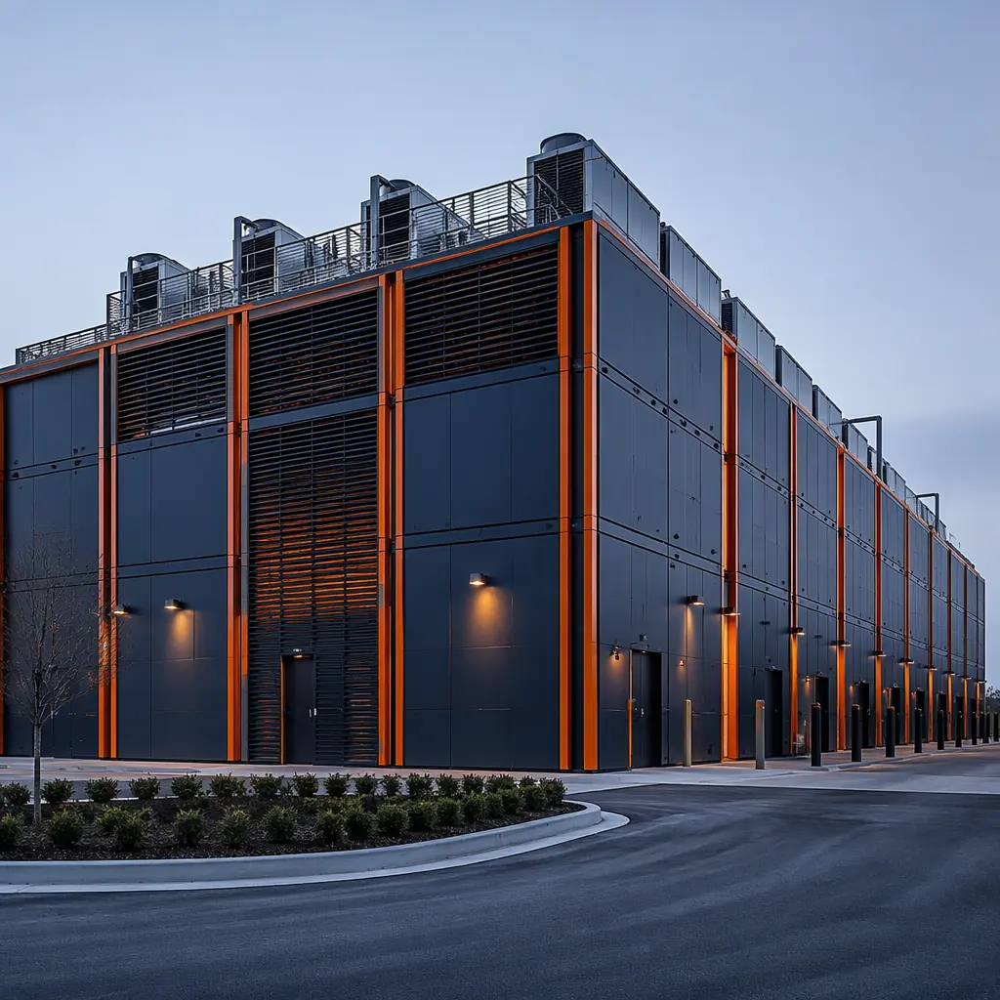
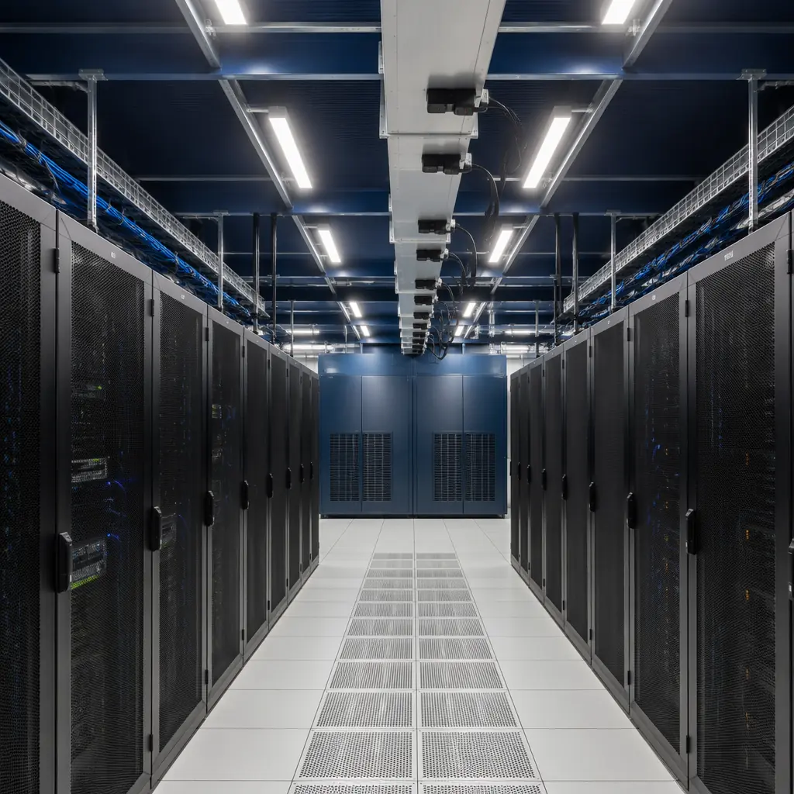

The global colocation data center market is projected to reach $155 billion by 2030, driven by hyperscale cloud providers leasing wholesale capacity, enterprises migrating from on-premises data rooms to colocation facilities, and edge computing deployments requiring distributed capacity in secondary and tertiary markets. Yet the traditional construction model for colocation facilities — 24–36 month build cycles, complex MEP coordination, and phased tenant fit-outs that delay revenue recognition — is structurally misaligned with the speed at which capacity must come online. Modular prefabricated construction addresses this bottleneck by delivering purpose-built colocation modules from factory production lines: white space halls with pre-installed power distribution, cooling infrastructure, and physical security systems that arrive on site ready for interconnection. This article examines how modular delivery transforms the economics of colocation development — from multi-tenant meet-me rooms to single-tenant build-to-suit deployments — and why colocation providers including Equinix, Digital Realty, and CyrusOne are expanding modular procurement programs.

Why Colocation Providers Are Switching to Modular Construction
Colocation development economics revolve around two metrics: time-to-revenue (how quickly commissioned white space starts generating monthly recurring revenue) and capital efficiency (how much revenue each dollar of construction cost produces). Traditional colocation construction underperforms on both: a 10 MW data hall takes 18–24 months from groundbreaking to commissioning, during which carrying costs on land and construction financing accumulate while generating zero revenue. Modular delivery compresses this timeline through parallel factory and site work streams:
- Factory production of data hall modules — including pre-installed busway, containment, and cooling pipe headers — proceeds simultaneously with site preparation, foundation work, and utility connections. When modules arrive on site (typically 12–16 weeks after factory order), they are craned into position and interconnected in 4–6 weeks, compared to 12–16 weeks for equivalent site-built MEP installation.
- Phased capacity deployment. A colocation developer can build a 30 MW campus in three 10 MW modular phases, each generating revenue while the next phase is under construction. Traditional construction locks the developer into the full build-out before any revenue begins — a financing burden particularly acute for new market entries where demand absorption rates are uncertain.
- Tenant customization without schedule penalty. Build-to-suit colocation tenants — financial services firms requiring hardened cages, government agencies with specific security postures, healthcare organizations needing HIPAA-compliant environments — can specify their requirements during module production without disrupting the overall construction schedule. Factory-fabricated module interiors are customized at the production station, not on site.
For colocation providers evaluating modular delivery, the key performance indicator is revenue-ready days saved: a modular colocation facility that reaches commissioning 8–10 months earlier than a site-built equivalent generates 8–10 additional months of recurring revenue at 85–95% gross margin on that revenue. At $150–250/kW/month for wholesale colocation, a 10 MW facility that goes live 10 months earlier generates $15–25 million in incremental revenue — typically exceeding the entire modular construction premium. Our general data center construction analysis covers the broader modular data center landscape; the TCO comparison provides detailed build-vs-buy financial modeling.
![Factory floor of modular construction facility producing colocation data center modules, steel frame data hall modules with pre-installed busway and containment systems visible, overhead crane moving completed module to shipping bay, factory assembly line with multiple modules at different production stages, workers installing electrical distribution panels and cooling pipe headers, quality control station with test equipment, clean industrial environment with modular data hall modules showing factory-precision assembly](../generated/colocation-data-center-factory.webp)
Multi-Tenant Architecture: Engineering Colocation into Modular Design
Colocation facilities have architectural requirements that differ fundamentally from single-tenant enterprise data centers. Multi-tenancy demands physical separation between customer environments, metered power distribution per cage or suite, carrier-neutral meet-me rooms with cross-connect infrastructure, and shared redundant MEP systems that can be maintained without affecting tenant loads. Modular construction addresses these requirements through purpose-designed module configurations:
| Colocation Component | Module Configuration | Key Requirements | Modular Advantage |
|---|---|---|---|
| White Space Data Halls | 16×60 ft wide-span modules, 2 MW per module | Raised floor (36 in.), hot/cold aisle containment, overhead busway 400A–800A | Busway and containment factory-installed and tested; modular increments of 2 MW capacity align capital deployment with leasing velocity |
| Meet-Me Rooms (MMR) | 12×40 ft modules, dedicated fiber entry, overhead cable tray | Carrier-neutral entry, cross-connect patch panels, biometric access, 2N cooling | Factory-installed cable management with pre-terminated fiber patch panels; carrier entry conduits built into module walls |
| Power Modules (Electrical Rooms) | 12×30 ft modules dedicated to switchgear, UPS, and distribution | N+1 UPS configuration, dual A/B power distribution to each tenant cage, generator connection points | UPS and switchgear factory-installed and commissioned on factory test load before shipping; eliminates field commissioning errors |
| Cooling Plant Modules | 12×40 ft modules housing chillers, CRAH units, and piping headers | N+1 chiller redundancy, 15–25 kW/rack cooling density, economizer mode capable | Pre-charged refrigerant circuits factory-tested under load; module-level cooling enables per-zone redundancy matching tenant SLA requirements |
| Security & Operations Center | 12×40 ft modules with ballistic-rated wall panels | Mantrap entry, biometric access control, CCTV coverage, 24/7 NOC desk | Security infrastructure — access control panels, camera NVR, intercom — factory-installed and tested before module leaves factory |
| Tenant Cage/Colocation Suites | Demising walls factory-installed between rack rows, 5–50 racks per suite | Floor-to-deck cage walls, per-suite power metering (branch circuit monitoring), dedicated cooling zone | Cage walls and per-suite metering infrastructure factory-installed; new tenant activation in days not weeks |
The modular approach transforms colocation development from a single large-scale construction project into a capacity-on-demand supply chain: order modules as leasing velocity dictates, deploy in 4–6 weeks from factory delivery, and commission in 2–3 weeks. MEP systems integration details how factory-preinstalled electrical and mechanical infrastructure achieves higher quality than field installation. For edge colocation deployments in secondary markets, see our telecom shelter analysis, which covers smaller-footprint modular infrastructure with overlapping MEP requirements.

Build-to-Suit: Enterprise Colocation with Custom Requirements
Approximately 40% of colocation revenue comes from build-to-suit deployments — single-tenant facilities built to enterprise specifications within a multi-tenant colocation campus. These tenants — typically financial services firms, government agencies, and large healthcare systems — require custom security postures, compliance certifications (SOC 2 Type II, FedRAMP, HITRUST), and infrastructure configurations that cannot be satisfied by generic white space. Modular construction delivers build-to-suit colocation with several advantages over traditional methods:
- Compliance pre-certification. Modules destined for FedRAMP Moderate or HITRUST-certified environments can have security controls — video surveillance coverage patterns, access control reader placement, cage wall construction, visitor escort procedures signage — factory-installed and documented during production. The factory QA/QC records serve as evidence artifacts for the certification audit, reducing the audit preparation timeline by 4–8 weeks compared to field-built facilities where documentation must be reconstructed after construction.
- Financial services hardening. Trading firms and banking tenants requiring physical security beyond standard colocation — reinforced cage walls, anti-climb perimeter fencing at the suite level, dedicated security operations desk within the suite — can receive factory-built modules with these features integrated during production. Fire-rated construction requirements for financial services data centers (NFPA 75 for IT equipment areas) are factory-documented with UL-listed assembly numbers for every fire-rated wall and penetration.
- Government SCIF-compatible modules. Federal tenants requiring Sensitive Compartmented Information Facility (SCIF) construction per ICD 705 can receive modules with RF shielding (copper mesh or conductive paint), acoustic protection (STC 50+ wall assemblies with sound masking), and visual safeguards (line-of-sight analysis, window treatments) factory-installed and tested with documented continuity and attenuation measurements.
The colocation industry's shift toward modular delivery is not a construction methodology preference — it is a capital allocation imperative. When a 10 MW colocation facility can generate $18 million in revenue during the 10 months a traditional build would still be under construction, the financial case for modular delivery becomes undeniable. Colocation providers who treat modular as a procurement option rather than a strategic capability are leaving revenue on the table that their modular-adopting competitors are capturing.
Our developer ROI guide provides financial modeling frameworks applicable to colocation projects. Cost per square foot analysis breaks down modular colocation construction costs by subsystem — structure, MEP, security, and finishing — for accurate pro forma modeling.

Power Density and Cooling: Designing for 25+ kW per Rack
Ten years ago, 5 kW per rack was a standard colocation design density. Today, AI/ML training clusters routinely require 25–50 kW per rack, and GPU-dense configurations from NVIDIA DGX and similar platforms push toward 75 kW per rack in liquid-cooled deployments. Modular colocation facilities must accommodate this density trajectory without requiring major infrastructure retrofit every 3–5 years — a challenge that modular's granular scalability addresses directly.
- High-density cooling zones. Within a modular data hall, specific zones can be factory-configured for direct-to-chip liquid cooling (cold plates with facility water supply/return, CDU per rack row) while adjacent zones operate on conventional air cooling. This mixed-density design — impossible to retrofit cost-effectively in a site-built data hall with a monolithic cooling plant — is straightforward when modules are factory-configured for their intended density tier.
- Power distribution at module level. Each modular data hall module can be factory-equipped with its own power distribution unit (PDU) and remote power panel (RPP), sized for the module's design density (e.g., 2 MW for a standard module, 4 MW for a high-density module). This isolates density upgrades to individual modules — a high-density AI module can be added to an existing colocation campus without affecting the power topology of adjacent standard-density modules.
- Future-proofing with spare capacity. Module structural frames are engineered for the maximum foreseeable mechanical load — factory-floor steel connections are designed for 150% of initial equipment weight — so that cooling upgrades (adding rear-door heat exchangers, installing overhead liquid cooling piping) can be performed within the module without structural reinforcement. This load headroom, trivial in factory fabrication, is expensive and disruptive to add in an operating data hall.
Cold storage facilities and clean room construction share precision climate control requirements that inform data center cooling design. Solar and BESS infrastructure covers renewable energy integration — increasingly important as colocation providers face tenant demands for carbon-neutral colocation services.
Speed-to-Revenue: The Modular Colocation Business Case in Numbers
For a colocation developer evaluating modular vs. traditional delivery for a 20 MW campus (two 10 MW phases), the financial comparison is quantifiable:
| Metric | Traditional Construction | Modular Construction | Delta |
|---|---|---|---|
| Phase 1 construction duration (groundbreaking to commissioning) | 18–24 months | 10–14 months | 8–10 months faster |
| Phase 2 start (relative to Phase 1 commissioning) | After Phase 1 complete (sequential) | Concurrent with Phase 1 module production | Overlapping phases possible |
| Construction cost premium for modular | Baseline: $9–12M per MW | +5–8% factory premium, -12–15% site labor savings | Net 3–5% savings (modular parity or better at scale) |
| Revenue during accelerated timeline (10 MW at $200/kW/month, 85% utilization, 10 months earlier) | $0 (still under construction) | ~$17 million | Pure incremental revenue |
| Carrying cost savings (construction loan interest on $100M, 10 months, 7% rate) | $5.8M interest during construction | $2.9M interest during construction | $2.9M savings |
| Total financial advantage (revenue + interest savings, 10 MW Phase 1) | Baseline | ~$19.9 million | ROI on modular premium: 10× or greater |
This arithmetic explains why colocation developers are not just experimenting with modular construction — they are restructuring their development programs around it. The financial penalty for traditional construction in the colocation sector is no longer a modest schedule delay; it is a multi-million-dollar revenue opportunity cost that modular delivery eliminates. Construction financing strategies and tax benefit analysis provide additional financial planning tools for colocation developers.